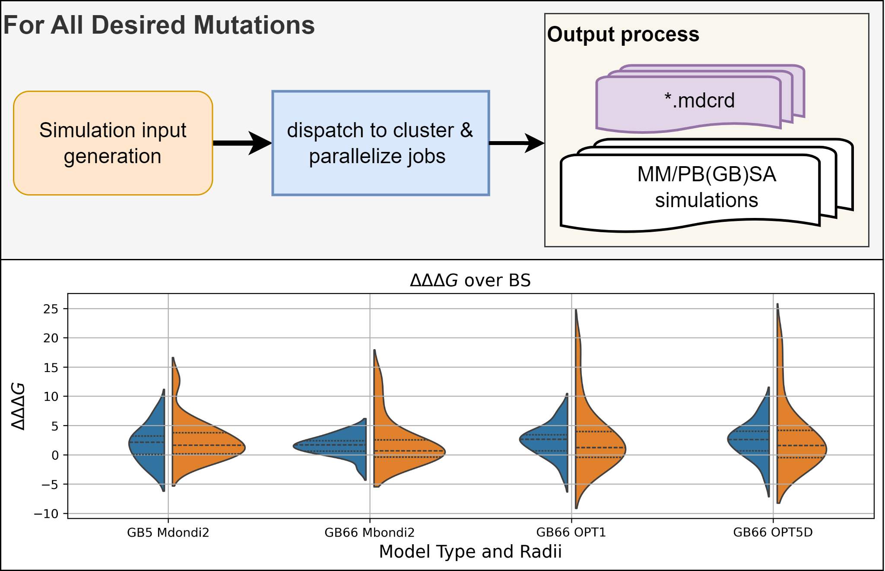

High Throuput Mutational Scanning In Amber
¶This documentation section is dedicated to illustrating the High Throughput Mutational Scanning (HTMS) pipeline, designed for efficient use within the Amber molecular dynamics environment. Here, we will guide you through the practical aspects of implementing HTMS-Amber. We’ll cover the essential setup and execution steps for both standard Alanine Scanning and the more involved Non-Alanine Mutations. While this section focuses on providing a quick start with functional examples, for more details, please consult the detailed documentation and the source code.

A General Overview of the pipeline with its potential applications for high-throughput calculations of changes in binding free energies of multiple mutations
Command-Line Usage¶
You can get a quick overview of the pipeline’s command-line arguments by running it with the --help flag:
$ python htms_pipeline.py --help
usage: htms_pipeline.py [-h] [--input_file INPUT_FILE] [--just_build]
[--amber_path AMBER_PATH] [--test] [--non_ala]
-h, --help
: show this help message and exit
--input_file INPUT_FILE
: Your input file with all the necessary parameters for the analysis.
--just_build
: Set this flag to generate the .sh files for each run without actually executing them.
--amber_path AMBER_PATH
: Optional: Provide the full path to your AMBERHOME directory. If you skip this, the script will try to use the AMBERHOME environment variable.
--test
: Optional: Run in test mode, useful for debugging or dry runs. This uses a dummy Amber path, so you can try out the pipeline features locally without needing a full Amber installation.
--non_ala
: Optional: Enable Non-Alanine scanning. Alanine scanning is the default. You can still do Alanine mutations with this, but it’ll involve a MODELLER call. We recommend running Alanine scanning separately (i.e., deploy the Ala and Non-Ala pipelines independently).
Overview of Alanine Scanning¶
Without *mcdrd files¶
Prior to deploying the pipeline, as done below, the user should make use of the run_simulation_gpu.sh script. The user is free to customize their input files (*.in) as presented in the AMBER manual.
Note: The provided tmp_input_file.txt assumes all *.mcdrd files are located in the same folder as the htms_pipeline.py call.
With *mcdrd files¶
To run the Alanine Scanning pipeline edit the tmp_input_file.txt according your desired specifications. In this example we will be looking at 3 mutations: T:470:A E:471:A I:472:A
For the purposes of demonstrating the workflow we are calling htms_pipeline.py from the example direcotry. Moreover, we are making use of the –just_build option to not actully run our mmpbsa.py calls. This is done to showcase the standard output format.
HTMS_Amber\examples$ python ..\HTMS_Amber\htms_pipeline.py --input_file .\tmp_input_file.txt --just_build --test
Simply call the script as below to delpoy the pipeline properly:
HTMS_Amber\examples$ python ..\HTMS_Amber\htms_pipeline.py --input_file .\tmp_input_file.txt
We note mmpbsa.in in placed within the directory the pipeline is deployed from and shared amoung all runs.
Overview of Non-Alanine Mutations¶
In order to handle non-Alanine mutations we opt to incorporate a call to MODELLER for mutated pdb file generation.
Note
The Non-Alanine Mutations pipeline requires an active installation of MODELLER. Please consult their official documentation for detailed instructions on how to install and configure it for your environment.
HTMS_Amber\examples$ python ..\HTMS_Amber\htms_pipeline.py --input_file .\non_ala_tmp_input_file.txt --just_build --test --non_ala
We note the current implementation of the non_alanine scanning pipeline will require the user to first run production runs, then mmpbsa. Given this we opt to dispatch these separetley so we can make use of GPU production, and then scale back to minimal cpu and memory requirements for the mmpbsa.py portion
Sample output files from this call are present in the exmaples folder under _E417N, _E484K_N501Y
Further Documentation and Examples¶
Contents: